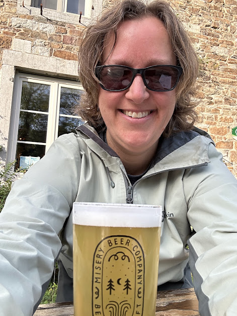
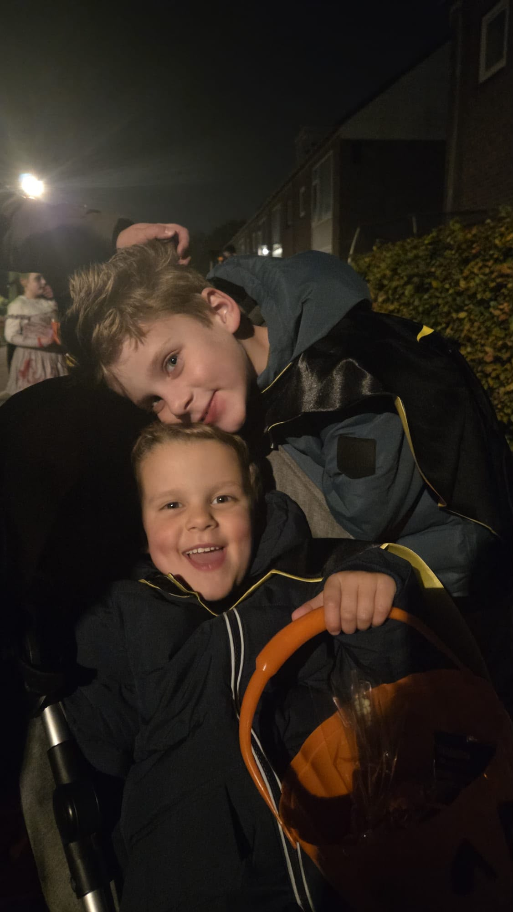

Silvia Ekkerman
Ik ben Silvia Ekkerman, 41 jaar, geboren en getogen in Stadskanaal en woonachtig in het gehucht Oldehove.
Ik ben Silvia Ekkerman, 41 jaar, geboren en getogen in Stadskanaal en woonachtig in het gehucht Oldehove.
Ik ben al 10+ jaar werkzaam als theoriedocent op de Hanze in Life Sciences en ik volg momenteel de cursus Make-IT work om te oriënteren of het werken in de IT mij ligt.
Fietsen
Hardlopen


Momenteel is mijn favoriete boek "Dungeon Crawler Carl van Matt Dinniman
Mijn favoriete LEGO set is het kasteel van Zweinstein
Mijn favoriete speciaalbier hangt af van het seizoen in de herfst is dit een stout